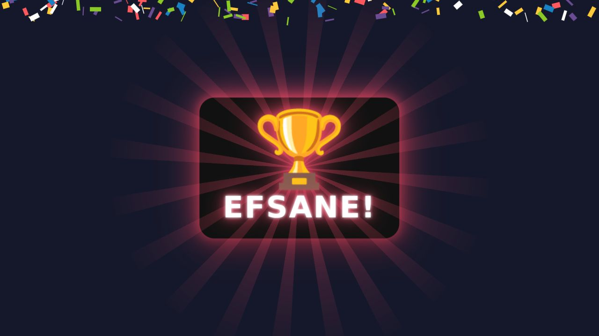
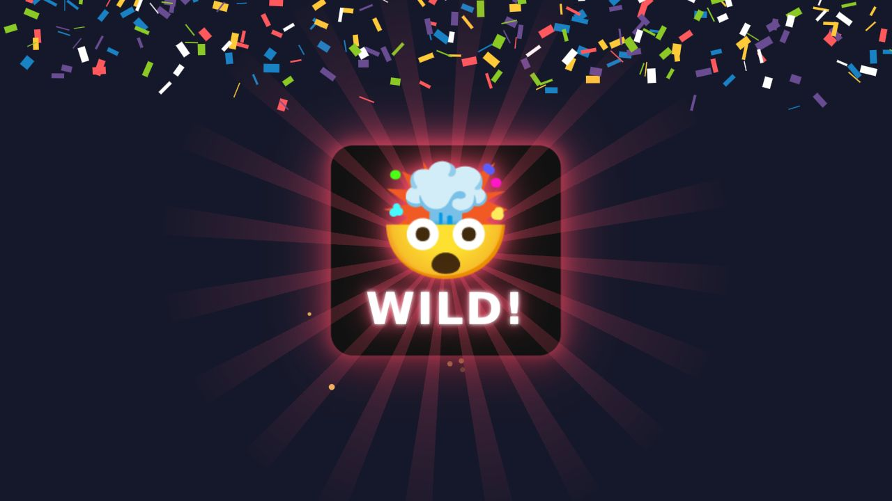
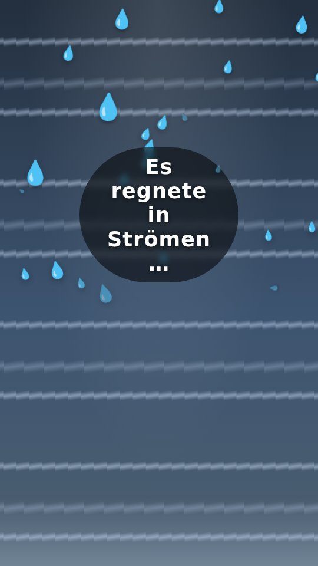
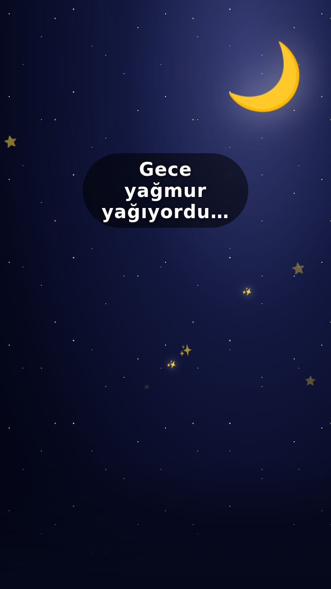
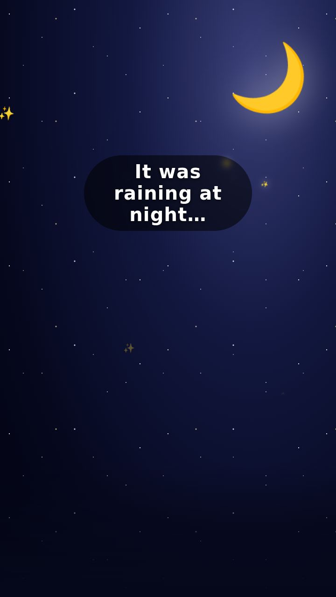
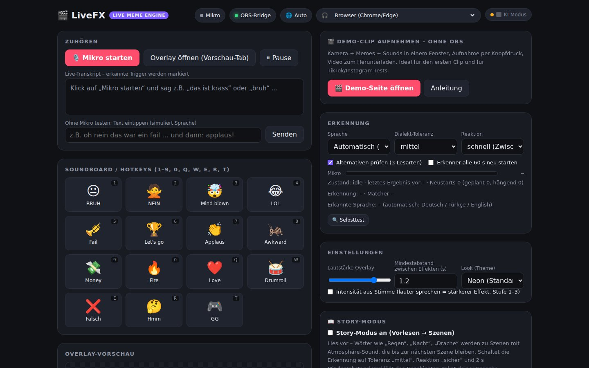
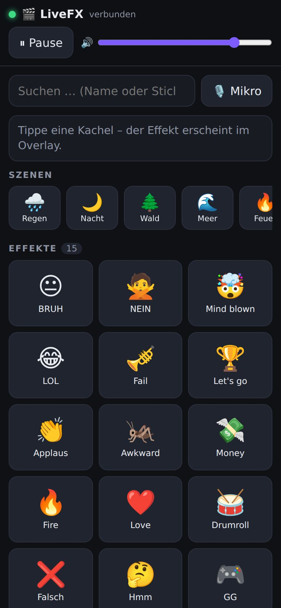
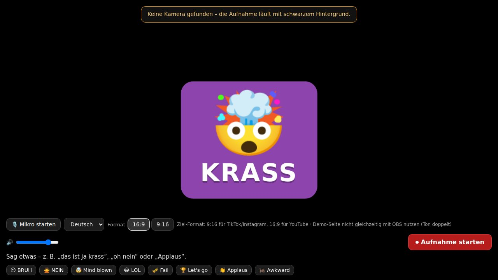

Deine Stimme wird zum Effekt.Sesin efekte dönüşür.Your voice becomes the effect.
LiveFX hört dir im Live-Stream zu. Sagst du „krass“, „yok artık“ oder „es regnete“, erscheint in unter einer Sekunde das passende Meme, der Sound oder die Szene – hands-free, auf TikTok LIVE, Instagram, YouTube und Twitch.LiveFX canlı yayında seni dinler. „Yok artık“, „ohaa“ ya da „yağmur yağıyordu“ dediğinde bir saniyeden kısa sürede uygun meme, ses veya sahne belirir – eller serbest, TikTok LIVE, Instagram, YouTube ve Twitch’te.LiveFX listens to you while you stream. Say "bruh", "let’s go" or "it was raining" and the matching meme, sound or scene appears in under a second – hands-free, on TikTok LIVE, Instagram, YouTube and Twitch.
Kostenlos · läuft lokal · Chrome/Edge + OBS · Version 2.0Ücretsiz · yerel çalışır · Chrome/Edge + OBS · Sürüm 2.0Free · runs locally · Chrome/Edge + OBS · version 2.0



50 Sekunden, die mehr sagen als jede Folie50 saniye, her slayttan daha fazlasını anlatır50 seconds that say more than any slide
Alles, was Kurzvideos haben – jetzt liveKısa videoların sahip olduğu her şey – artık canlıEverything short videos have – now live
Wie Live-Untertitel, nur mit Bildern, Animationen und Geräuschen.Canlı altyazı gibi, ama görsel, animasyon ve seslerle.Like live captions, but with images, animations and sounds.
Stimme → EffektSes → EfektVoice → Effect
Sag „krass“, „yok artık“ oder „bruh“ – in unter einer Sekunde erscheint Meme, Sound oder Szene.„Yok artık“, „ohaa“ ya da „helal olsun“ de – bir saniyeden kısa sürede meme, ses veya sahne belirir.Say "krass", "yok artık" or "bruh" – meme, sound or scene appears in under a second.
DE / TR / EN automatischDE / TR / EN otomatikDE / TR / EN automatic
Erkennt beim Sprechen, welche Sprache du gerade redest – mit Dialekt-Toleranz und Lernfunktion.Konuşurken hangi dili kullandığını anlar – ağız toleransı ve öğrenme fonksiyonuyla.Detects which language you are speaking – with dialect tolerance and a learning function.
Story-ModusHikâye moduStory mode
Vorlesen wird Kino: 13 Vollbild-Szenen (Regen, Nacht, Wald, Drache …) mit Atmosphäre-Sound.Okumak sinemaya dönüşür: 13 tam ekran sahne (yağmur, gece, orman, ejderha …) ve atmosfer sesleri.Reading aloud becomes cinema: 13 full-screen scenes (rain, night, forest, dragon …) with ambient sound.
Effekt-Engine v2Efekt motoru v2Effects engine v2
Partikel mit Physik bei 60 fps, Neon-/Glitch-Text, Bauchbinden, Konfetti, Kombis, 4 Looks.60 fps fizikli parçacıklar, neon/glitch yazı, alt bant, konfeti, kombolar, 4 görünüm.Physics particles at 60 fps, neon/glitch text, lower thirds, confetti, combos, 4 themes.
38 eigene Sounds38 özgün ses38 built-in sounds
Synthetisch erzeugt – keine Lizenzkosten, keine Copyright-Strikes. Mixer mit Limiter und Ducking.Sentetik üretim – lisans ücreti yok, telif cezası yok. Limiter ve ducking içeren mikser.Synthesised – no licence fees, no copyright strikes. Mixer with limiter and ducking.
Zuschauer-Triggerİzleyici tetikleyicileriViewer triggers
Twitch-Chat, YouTube-Chat, Geschenke-Webhook: Zuschauer lösen Effekte per Befehl oder Geschenk aus.Twitch sohbeti, YouTube sohbeti, hediye webhook’u: izleyiciler komut veya hediyeyle efekt tetikler.Twitch chat, YouTube chat, gift webhook: viewers fire effects via commands or gifts.
Handy-FernbedienungTelefon kumandasıPhone remote
Alle Trigger als Kacheln auf dem Handy, Szenen-Reihe, Lautstärke, Pause – als PWA, auch offline.Tüm tetikleyiciler telefonda kutucuk olarak, sahne sırası, ses, duraklat – PWA, çevrimdışı da çalışır.All triggers as tiles on your phone, scene row, volume, pause – as a PWA, works offline.
Offene APIAçık APIOpen API
Stream Deck, Chat-Bots, Whisper/Deepgram: alles per HTTP mit Token. OBS, Streamlabs, TikTok LIVE Studio.Stream Deck, sohbet botları, Whisper/Deepgram: hepsi token’lı HTTP ile. OBS, Streamlabs, TikTok LIVE Studio.Stream Deck, chat bots, Whisper/Deepgram: all via HTTP with a token. OBS, Streamlabs, TikTok LIVE Studio.
In 2 Minuten im Stream2 dakikada yayındaIn your stream in 2 minutes
Server startenSunucuyu başlatStart the server
ZIP entpacken, Node.js installiert haben, einen Befehl im Terminal.ZIP’i aç, Node.js kurulu olsun, terminalde tek komut.Unzip, have Node.js installed, one command in the terminal.
node server.jsPanel öffnenPaneli açOpen the panel
Chrome oder Edge: „Mikro starten“, Paket laden (Türkçe, Deutsch, English …), etwas sagen.Chrome veya Edge: „Mikrofonu başlat“, paket yükle (Türkçe, Deutsch, English …), bir şey söyle.Chrome or Edge: "Start mic", load a pack (Türkçe, Deutsch, English …), say something.
http://127.0.0.1:8787/OBS-BrowserquelleOBS tarayıcı kaynağıOBS browser source
In OBS/Streamlabs/TikTok LIVE Studio eine Browser-Quelle anlegen – Hochkant mit ?layout=portrait.OBS/Streamlabs/TikTok LIVE Studio’da bir tarayıcı kaynağı ekle – dikey için ?layout=portrait.Add a browser source in OBS/Streamlabs/TikTok LIVE Studio – portrait with ?layout=portrait.
http://127.0.0.1:8787/overlay.htmlSo sieht es ausBöyle görünüyorWhat it looks like






Ein Klick, 238 TriggerTek tık, 238 tetikleyiciOne click, 238 triggers
Im Panel laden, wieder entfernen, eigene Trigger dazu – plus Geschichten-Pakete für den Story-Modus in drei Sprachen.Panelden yükle, kaldır, kendi tetikleyicilerini ekle – artı üç dilde hikâye modu için masal paketleri.Load them in the panel, remove them again, add your own – plus story packs for story mode in three languages.
Du redest. Es wird Bild.Sen anlat – sahne oluşsun.You talk. It becomes a scene.
Was jemand erzählt, vorliest oder unterrichtet, wird in derselben Sekunde zur Szene, zur Wortkarte mit Aussprache oder zum fertig geschnittenen Clip. Gezeichnet im Browser statt generiert im Rechenzentrum: mit dem Rechenbudget eines Untertitels.Anlatılan, okunan ya da öğretilen her şey aynı saniyede bir sahneye, sesli bir kelime kartına ya da kurgulanmış bir klibe dönüşür. Veri merkezinde üretilmez, tarayıcıda çizilir: bir altyazının işlem gücüyle.Whatever someone tells, reads aloud or teaches becomes a scene, a word card with pronunciation or a finished clip in the same second. Drawn in the browser instead of generated in a data centre, on the compute budget of a subtitle.
ErzählfilmAnlatı FilmiStory Film
Du liest vor, darunter entsteht Satz für Satz ein animierter Bilderbuch-Film: Nacht, Wald, Regen, Drache. Deterministisch in Canvas, ohne Video-KI.Sen okursun, altında cümle cümle animasyonlu bir resimli kitap filmi oluşur: gece, orman, yağmur, ejderha. Canvas’ta deterministik, video yapay zekâsı olmadan.You read aloud, and an animated picture-book film builds up underneath, sentence by sentence: night, forest, rain, dragon. Deterministic in canvas, no video AI.
WortBildKelime-ResimWordPicture
Ein gesagtes Wort erscheint als Bild mit dem Wort in der Zielsprache und Aussprache 🔊 – oder in der eigenen Sprache als Lesehilfe. Für Kinder, Schule, DaZ und Türkisch.Söylenen kelime resim olarak, hedef dildeki karşılığı ve telaffuzuyla 🔊 belirir – ya da okuma desteği olarak kendi dilinde. Çocuklar, okul, Almanca ve Türkçe öğrenimi için.A spoken word appears as a picture with the word in the target language and its pronunciation 🔊, or in your own language as a reading aid. For children, schools, German and Turkish learners.
LiveFX RäumeLiveFX MekânlarLiveFX Spaces
Dieselbe Zeitleiste auf Bühne, Leinwand im Klassenzimmer, Hörbuch und Podcast mit Bild, AR im Handy und später in der Brille.Aynı zaman çizelgesi sahnede, sınıftaki perdede, resimli sesli kitapta ve podcast’te, telefonda AR ile, ileride de akıllı gözlükte.The same timeline on stage, on the classroom screen, in audiobooks and podcasts with pictures, in phone AR and later in smart glasses.
LiveFX Studio
Live schneiden oder ein fertiges Video hineinwerfen: Transkript, Memes, Szenen und Schnitt entstehen automatisch, Export im Browser.Canlı kurgula ya da hazır bir videoyu sürükle bırak: transkript, meme’ler, sahneler ve kesmeler kendiliğinden oluşur, dışa aktarma tarayıcıda.Edit live, or drop in a finished video: transcript, memes, scenes and cuts are added automatically, and export runs in the browser.
Selbst ausprobierenKendin deneTry it yourself
Zwei Prototypen als einzelne HTML-Dateien, offline, ohne Konto. Oberfläche DE/TR/EN, Umschalter oben rechts.Tek HTML dosyası olarak iki prototip, çevrimdışı, hesap gerektirmez. Arayüz DE/TR/EN, dil seçimi sağ üstte.Two prototypes, each a single HTML file, offline, no account. Interface in DE/TR/EN, switch at the top right.
🎬 Erzählfilm: Live-Story-EngineAnlatı Filmi: canlı hikâye motoruStory Film: live story engine 🍎 WortBild: Sprachen lernenKelime-Resim: dil öğrenWordPicture: learn languagesMikrofon in Chrome/Edge; Tippen geht überall.Mikrofon Chrome/Edge’de; yazarak her tarayıcıda.Microphone in Chrome/Edge; typing works everywhere.
Kostenlos starten, mit dem Stream wachsenÜcretsiz başla, yayınla birlikte büyüStart free, grow with your stream
- Alle KernfunktionenTüm temel özelliklerAll core features
- Standard-Pakete DE/TR/ENStandart paketler DE/TR/ENStandard packs DE/TR/EN
- OBS-Overlay, HochkantOBS overlay, dikeyOBS overlay, portrait
- 38 Sounds, 13 Szenen38 ses, 13 sahne38 sounds, 13 scenes
- KI-Modus (Sätze ohne Stichwort)Yapay zekâ modu (anahtar kelimesiz cümleler)AI mode (sentences without keywords)
- Alle Szenen & LooksTüm sahneler ve görünümlerAll scenes & themes
- Handy-Fernbedienung, SyncTelefon kumandası, senkronPhone remote, sync
- Priorität-SupportÖncelikli destekPriority support
- Meme- & Story-Pakete von CreatornYayıncılardan meme ve hikâye paketleriMeme & story packs by creators
- Eigene Pakete verkaufenKendi paketlerini satSell your own packs
- Marktplatz (geplant)Pazar yeri (planlanıyor)Marketplace (planned)
- SDK / White-LabelSDK / beyaz etiketSDK / white label
- Plattform-IntegrationPlatform entegrasyonuPlatform integration
- Agenturen & Streaming-SoftwareAjanslar ve yayın yazılımlarıAgencies & streaming software
Pro und Creator-Packs sind in Vorbereitung; heute ist alles kostenlos.Pro ve Creator paketleri hazırlanıyor; bugün her şey ücretsiz.Pro and creator packs are in preparation; today everything is free.
LiveFX herunterladenLiveFX’i indirDownload LiveFX
ZIP entpacken, Node.js (ab 18) installieren, Server starten – fertig. Keine Installation, kein Account.ZIP’i aç, Node.js (18+) kur, sunucuyu başlat – bitti. Kurulum yok, hesap yok.Unzip, install Node.js (18+), start the server – done. No installer, no account.
cd live-fx node server.js # → http://127.0.0.1:8787
Unterlagen für Partner, Förderer und PresseOrtaklar, destekçiler ve basın için belgelerDocuments for partners, funders and press
Anleitungen für OBS, TikTok LIVE Studio, Instagram Live Producer, Handy und Ton-Check liegen im Ordner docs/.OBS, TikTok LIVE Studio, Instagram Live Producer, telefon ve ses kontrolü kılavuzları docs/ klasöründe.Guides for OBS, TikTok LIVE Studio, Instagram Live Producer, phone and audio check are in the docs/ folder.
Häufige FragenSık sorulan sorularFrequently asked questions
Datenschutz – wo laufen meine Daten?Gizlilik – verilerim nerede işleniyor?Privacy – where does my data go?
LiveFX läuft komplett lokal auf deinem Rechner. Trigger, Medien und Einstellungen liegen in einem Ordner bei dir; es gibt keinen Account, keine Cloud und kein Tracking. Der optionale KI-Modus schickt nur dann einzelne Sätze an ein Sprachmodell, wenn du ihn mit eigenem API-Key einschaltest.LiveFX tamamen bilgisayarında yerel çalışır. Tetikleyiciler, medya ve ayarlar senin klasöründe durur; hesap, bulut veya izleme yok. İsteğe bağlı yapay zekâ modu yalnızca kendi API anahtarınla açtığında tek tek cümleleri bir dil modeline gönderir.LiveFX runs entirely on your own machine. Triggers, media and settings live in a folder on your computer; there is no account, no cloud and no tracking. The optional AI mode only sends individual sentences to a language model if you enable it with your own API key.
Brauche ich Internet?İnternet gerekli mi?Do I need an internet connection?
Nur für die Spracherkennung von Chrome/Edge (die läuft bei Google bzw. Microsoft). Overlay, Panel, Sounds und Effekte funktionieren offline. Experimentell gibt es eine Offline-Erkennung mit Whisper im Browser.Yalnızca Chrome/Edge’in konuşma tanıması için (Google/Microsoft tarafında çalışır). Overlay, panel, sesler ve efektler çevrimdışı çalışır. Deneysel olarak tarayıcıda Whisper ile çevrimdışı tanıma da var.Only for Chrome/Edge speech recognition (which runs at Google/Microsoft). Overlay, panel, sounds and effects work offline. An experimental offline recognition with Whisper in the browser is available.
Geht das auch nur mit dem Handy?Sadece telefonla olur mu?Can I use it with just my phone?
Das Handy ist Fernbedienung und Mikro (bei HTTPS). Das Overlay selbst braucht OBS, Streamlabs, TikTok LIVE Studio oder den Instagram Live Producer – Drittanbieter-Apps kommen auf dem Handy nicht ins Live-Bild. Genau dafür bauen wir das native Mobile-SDK.Telefon kumanda ve mikrofondur (HTTPS ile). Overlay için OBS, Streamlabs, TikTok LIVE Studio veya Instagram Live Producer gerekir – üçüncü taraf uygulamalar telefonda canlı görüntüye giremez. Yerel mobil SDK’yı tam bunun için geliştiriyoruz.The phone works as remote control and microphone (with HTTPS). The overlay itself needs OBS, Streamlabs, TikTok LIVE Studio or Instagram Live Producer – third-party apps cannot draw into the live picture on a phone. That is exactly what the native mobile SDK is for.
Hören meine Zuschauer Effekte doppelt (Echo)?İzleyiciler efektleri iki kez mi duyar (yankı)?Will my viewers hear effects twice (echo)?
Nein: Die Overlay-Vorschau im Panel ist stumm, nur die OBS-Browserquelle spielt Ton. Die Karte „Ton-Check“ im Panel prüft Mikro-Quelle, „Audio über OBS steuern“ und Monitoring in fünf Haken – und warnt, wenn ein Echo droht.Hayır: Paneldeki overlay önizlemesi sessizdir, sesi yalnızca OBS tarayıcı kaynağı çalar. Paneldeki „Ses kontrolü“ kartı mikrofon kaynağını, „Sesi OBS üzerinden kontrol et“ ve monitoring’i beş adımda kontrol eder – yankı riski varsa uyarır.No: the overlay preview in the panel is muted; only the OBS browser source plays sound. The "Audio check" card in the panel verifies mic source, "Control audio via OBS" and monitoring in five checks – and warns if an echo is likely.